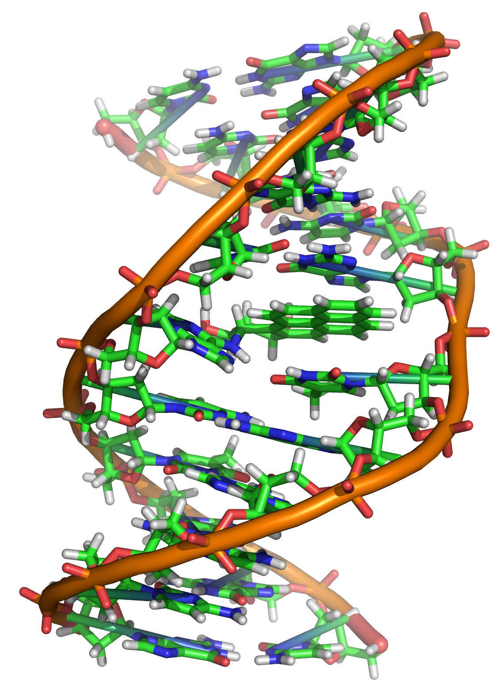

The BioCode Matlab toolbox available here implements the BioCode DNA information embedding algorithms described in detail in [1]. See also [2], where the fundamental limits of information embedding in DNA are discussed.
Enjoy!
Félix Balado
[1] D. Haughton and F. Balado, "BioCode: Two biologically compatible Algorithms for embedding data in non-coding and coding regions of DNA", 2013 [download]
[2] F. Balado, "Capacity of DNA data embedding under substitution mutations", IEEE Transactions on Information Theory, 59 (2):928-941, 2013. [download]